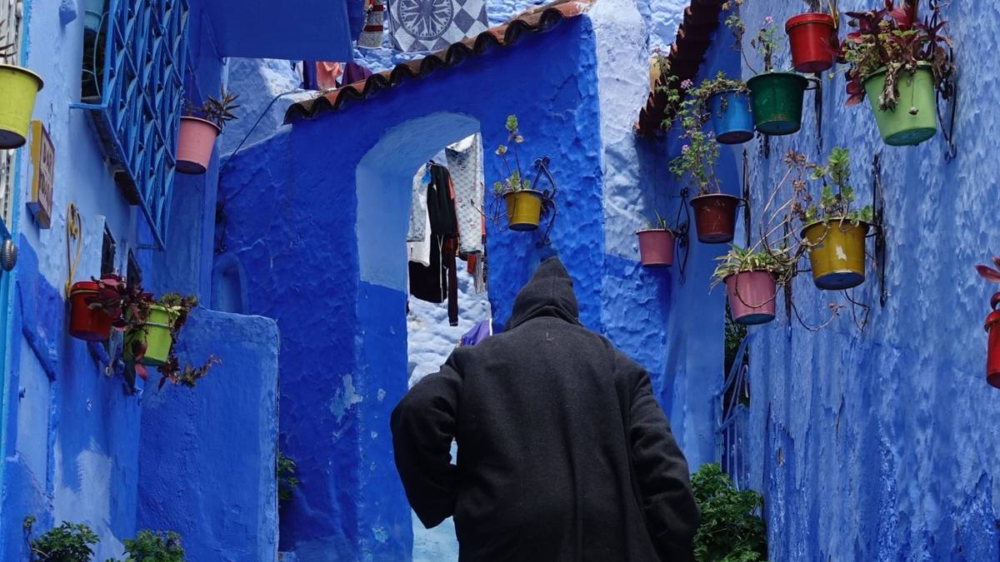
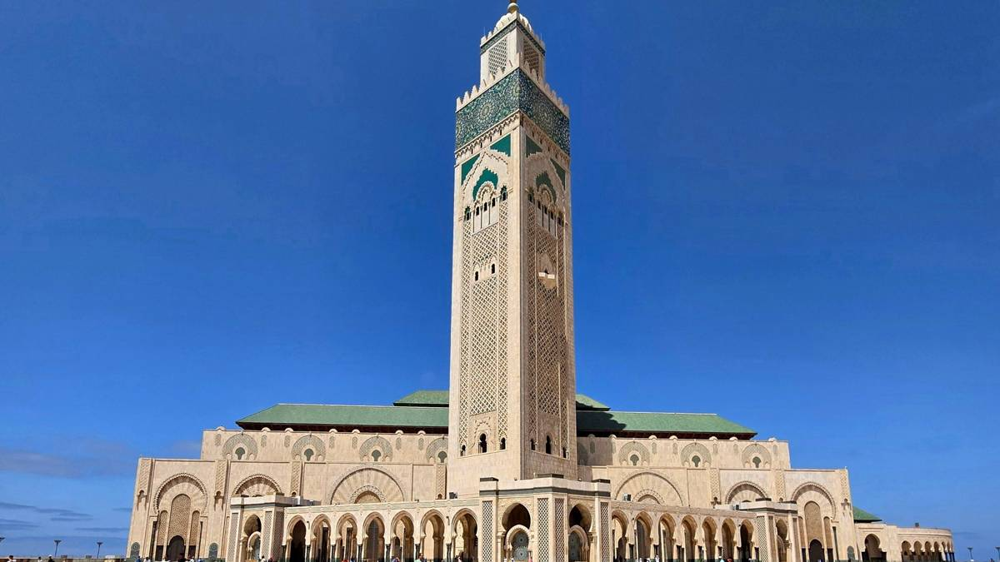
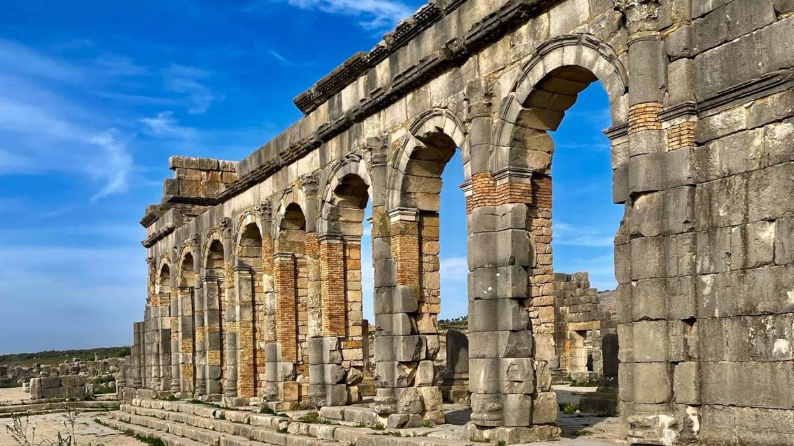
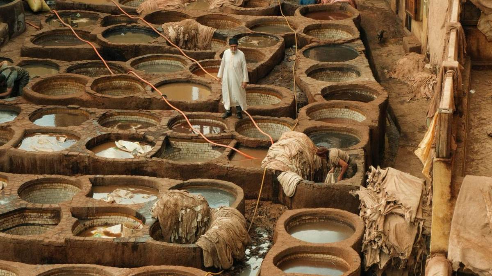
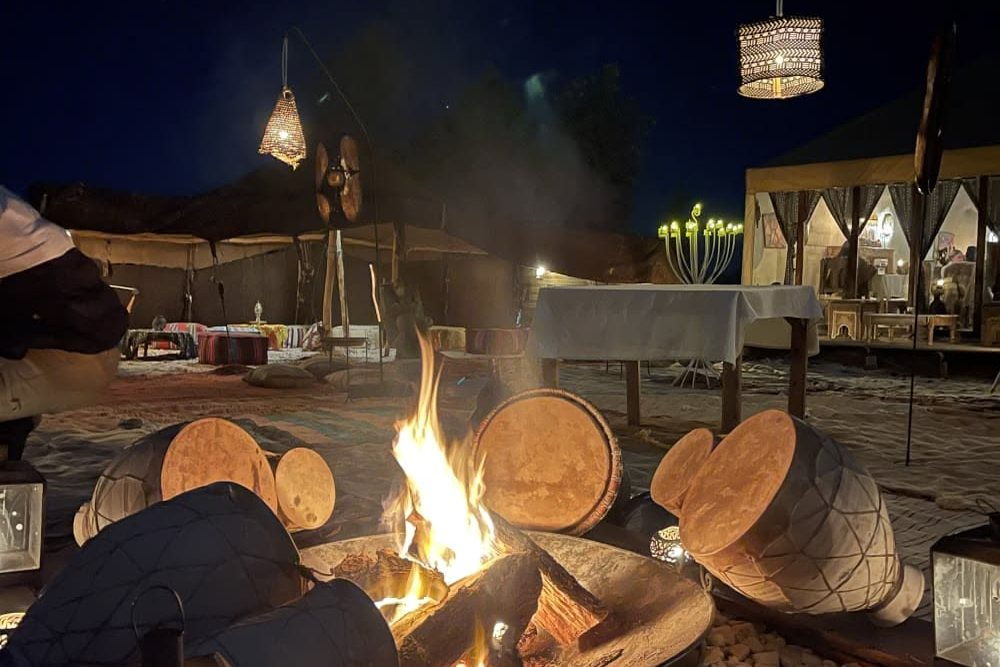
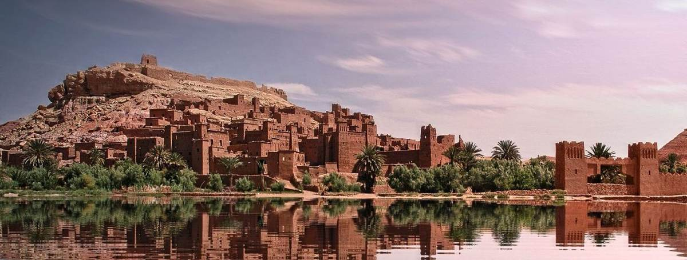

Seven days is the perfect length for a first trip to Morocco. In one week you can see the imperial cities, the blue streets of Chefchaouen, the Atlas Mountains and a night in the Sahara dunes, without spending every day in the car. The secret is choosing the right route for your flights.
In this guide we share the itinerary we recommend most, day by day, plus two alternatives depending on where you land, with driving times, the best season, a budget and our local tips.

Which 7-day route should you choose?
| Route | Best if you fly into | Highlights |
|---|---|---|
| A. The grand tour | Casablanca, out of Marrakech | Rabat, Chefchaouen, Fes, Sahara, Ait Benhaddou, Marrakech |
| B. Desert loop | Marrakech, in and out | Atlas, Ait Benhaddou, Dades, two nights in the Sahara, Draa Valley |
| C. Fes to Marrakech | Fes, out of Marrakech or Casablanca | Fes, Sahara, Dades, Ait Benhaddou, Marrakech |
If you want "a bit of everything", choose Route A. If you only want Marrakech and the desert at a relaxed pace, choose Route B.
Route A: the grand tour, day by day
Day 1: Casablanca and Rabat
Arrive in Casablanca and visit the Hassan II Mosque, built over the Atlantic and one of the few mosques in Morocco open to non-Muslim visitors on guided tours. Then drive about 1 hour to Rabat, the capital: the Kasbah of the Oudayas with its blue and white alleys, the Hassan Tower and the Mausoleum of Mohammed V.

Day 2: Rabat to Chefchaouen (about 4 h)
Drive north through farmland to the Rif Mountains and Chefchaouen. Spend the afternoon getting lost in its blue alleys, then walk up to the Spanish Mosque for sunset over the town.
Day 3: Chefchaouen to Fes (about 4 h)
On the way, stop at the Roman ruins of Volubilis and the holy town of Moulay Idriss, then continue to Fes for the night in a riad of the medina.

Day 4: Fes
A full day with a local guide in Fes el-Bali, the oldest medina in the world still in daily use and a car-free maze of thousands of alleys. Visit the Bou Inania Madrasa, the Al-Qarawiyyin area, the Nejjarine fountain and the famous Chouara tannery, best seen from a leather shop terrace in the morning.


Day 5: Fes to Merzouga (about 8 h)
The longest day, but a beautiful one. Cross the Middle Atlas through Ifrane, the "Switzerland of Morocco", and the cedar forest of Azrou with its Barbary macaques. Continue through Midelt and the palm groves of the Ziz Valley to Merzouga. At sunset, ride a camel into the Erg Chebbi dunes to your desert camp for dinner, music and a night under the stars.

Day 6: Merzouga to Ait Benhaddou or Ouarzazate (about 7 h)
Wake up early for the sunrise over the dunes. Drive west to the Todra Gorge, with cliffs up to 300 metres high, then along the Road of a Thousand Kasbahs through the Dades Valley and the Valley of Roses, to Ait Benhaddou for the night.

Day 7: Ait Benhaddou to Marrakech (about 4 h)
Explore the fortified village of Ait Benhaddou, a UNESCO World Heritage Site and the setting of many films, then cross the High Atlas over the Tizi n'Tichka pass (2,260 m) to Marrakech. In the evening, discover Jemaa el-Fnaa square.

👉 See this 7-day tour from Casablanca
Add a day in Marrakech
Route A ends on the evening of day 7. If you can, add one more night to visit the medina, the Majorelle Garden and the palaces of Marrakech. Our Marrakech in 3 days guide shows you what to see.
Route B: the desert loop from Marrakech
Perfect if your flights go in and out of Marrakech and you want more time in the south.
- Day 1: Marrakech, the medina and Jemaa el-Fnaa.
- Day 2: Tizi n'Tichka, Ait Benhaddou, Ouarzazate, Dades Valley.
- Day 3: Todra Gorge, Merzouga, camel ride and desert camp.
- Day 4: A full day around Merzouga: nomad families, the Gnawa village of Khamlia, sunset on the dunes.
- Day 5: Merzouga to Zagora through Alnif and the Saghro mountains.
- Day 6: The palm groves of the Draa Valley to Ouarzazate.
- Day 7: Back to Marrakech over the Atlas.
👉 See the 7-day tour from Marrakech
Route C: from Fes to Marrakech
- Day 1: Arrival in Fes.
- Day 2: Guided tour of the Fes medina.
- Day 3: Ifrane, the cedar forest and the Ziz Valley to Merzouga, night in the desert.
- Day 4: Todra Gorge to the Dades Valley.
- Day 5: Ait Benhaddou and the Atlas to Marrakech.
- Day 6: Marrakech.
- Day 7: Transfer to Casablanca or your flight home.
Driving times and distances
Morocco is bigger than it looks on the map. Here are the main stages, with stops:
| Stage | Approx. driving time |
|---|---|
| Casablanca – Rabat | 1 h |
| Rabat – Chefchaouen | 4 h |
| Chefchaouen – Fes | 4 h |
| Fes – Merzouga | 7–8 h |
| Merzouga – Dades Valley | 4–5 h |
| Dades – Ait Benhaddou | 3 h |
| Ait Benhaddou – Marrakech | 4 h |
On a private tour, you stop whenever you want for photos, tea and short walks, which makes the long days much more pleasant.
When to go
- Spring (March to May): the best season. Mild weather everywhere and green landscapes. Easter is busy: see our Easter 2027 guide.
- Autumn (September to November): excellent, with warm days in the desert.
- Winter (December to February): sunny days but cold nights in the desert and possible snow on the Atlas passes.
- Summer (June to August): very hot inland. Prefer short desert visits and the coast.
More details in Best time to visit Morocco.
How much does a 7-day trip cost?
For a private tour with driver, accommodation in riads and a night in a desert camp, the price per person depends mainly on the group size, the level of accommodation and the season. Traveling as 4 or more lowers the price a lot, because the vehicle and driver are shared. Read How much does a trip to Morocco cost? or ask us for a free quote.
Our tips for a 7-day trip
- Book an open-jaw flight: arrive in one city and leave from another to avoid driving back.
- Don't try to see everything: Essaouira, the coast or the far south need extra days.
- One night in the desert is the minimum, two nights is ideal if you have time.
- Pack layers: it can be warm in the day and cold at night. See what to wear in Morocco.
- Carry some cash for tips, small shops and markets.
Frequently asked questions
Is 7 days enough for Morocco?
Yes, 7 days is enough for the main highlights: one or two imperial cities, the Atlas, the Sahara and Marrakech. With 10 days you can travel at a slower pace and add Chefchaouen or the coast. See our 10-day itinerary.
Can I do 7 days in Morocco without a car?
Between the big cities there are trains and buses, but the Atlas, the Dades Valley and the Sahara are very hard to reach without a vehicle. A private tour with driver is the most comfortable and time-efficient option.
What is the best route for first-timers?
Route A (Casablanca, Chefchaouen, Fes, Sahara, Marrakech) shows the most variety in one week. If you prefer to spend less time on the road, Route B from Marrakech is more relaxed.
Can I customise the itinerary?
Yes. All our tours are private, so we can change the start city, add nights or skip places. Tell us what you want and we will design it for you.
Keep reading: How many days do you need in Morocco? · 10 days in Morocco · Best places to visit